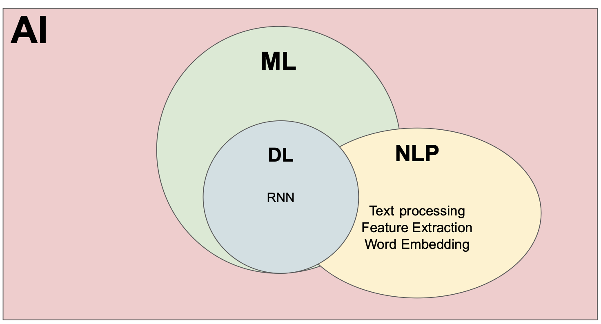
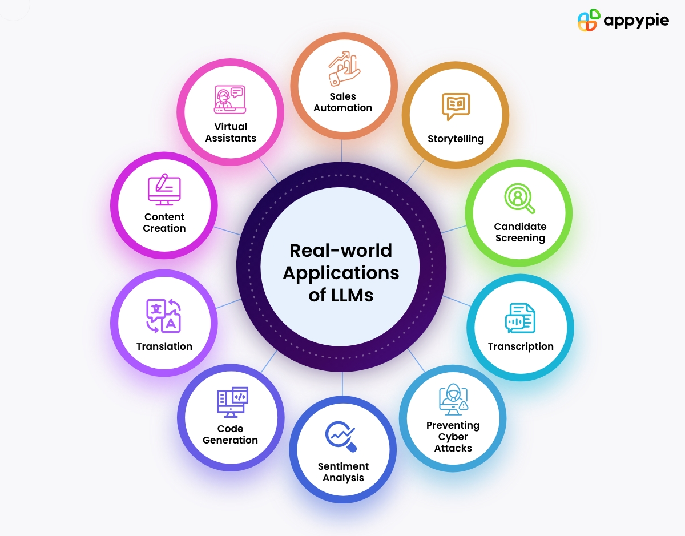
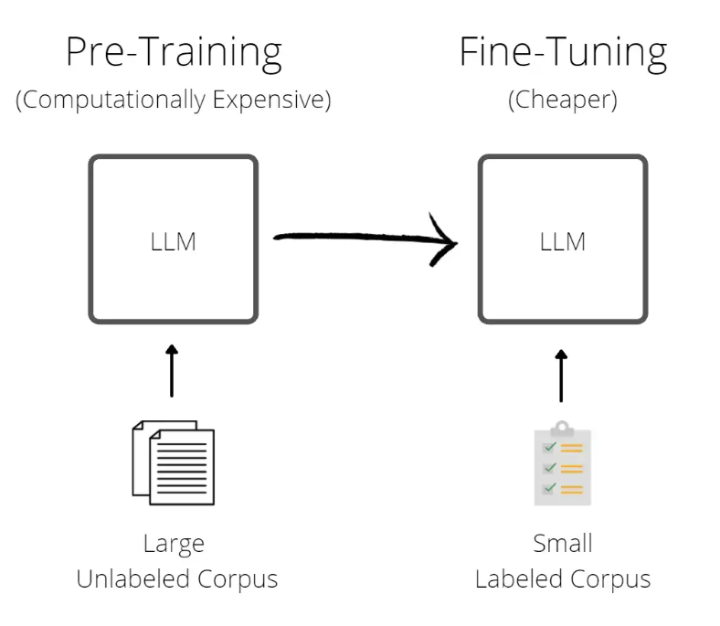

Introduction to Large Language Models (LLMs)
https://ubc-library-rc.github.io/llm/Land Acknowledgement
UBC Vancouver is located on the traditional, ancestral, and unceded territory of the xʷməθkʷəy̓əm (Musqueam) peoples.

Participants window

Learning Objectives
- Understand architecture and working of LLM
- Fine tune pre-trained LLM model to customize for a sample dataset
- Understand various aspects of using LLMs for research.
Pre-workshop setup
- GOOGLE COLAB (https://colab.research.google.com/)
Background
What are Large Language Models?
- Large Language Models (LLMs) are artificial intelligence systems designed to understand and generate human-like language.
- LLMs are fundamental to natural language processing, powering applications like chatbots, language translation, and content generation.
Let's pretend to be LLM (..or just a human)
- Excerise 1: The cat sat on a _____.
- LLM says: "The cat sat on a sunny windowsill, basking in the warmth of the afternoon sun."
- Excerise 2: Tell me a two sentence story of a dog named Pluto
- LLM says: "Pluto, a spirited golden retriever with a heart full of curiosity, embarked on a solo adventure through the bustling city streets. With a wagging tail and a friendly demeanor, he charmed everyone..."
Let's pretend to be LLM (..or a smart human)
- Excerise 3: Write a html code of a .....
- LLM writes the whole code in 10 seconds.
Many such applications of LLMs
From Appypie
Architecture of a typical LLM

From https://magazine.sebastianraschka.com/p/understanding-encoder-and-decoder
Some popular LLMs
- BERT (Bidirectional Encoder Representations from Transformers) (by Google)
- GPT (Generative Pre-trained Transformer) (by OpenAI)
- LLaMA (by Meta).
Fine tuning LLMs
From Medium
Fine tuning LLMs
- Full fine-tuning: Full fine-tuning refers to training all the parameters in the model. It is not an efficient technique, but it produces slightly better results.
- LoRA: A parameter-efficient technique (PEFT) based on low-rank adapters. Instead of training all the parameters, we only train these adapters.
Open Jupyter Notebooks
AI Literacy is not just about understanding AI functions and usage but also:
- Right Evaluation: Generalizibility and AI hallucination.
- Ethical considerations: Fairness, accountability, transparency, safety, etc.
Is it safe to use chatGPT?

Image by Aleksandr Tiulkanov, which is licensed under CC BY.
Using LLMs for research
- Advantages/Uses
- Covers multiple domains
- Can be used for brainstorming (wording your thoughts)
- Sentence formation for papers
- Disadvantages
- Lacks specificity
- Potential bias
- Lacks source
Ethics

Image from: Lepri, Bruno, Nuria Oliver, and Alex Pentland. "Ethical machines: The human-centric use of artificial intelligence." IScience 24.3 (2021): 102249.
Where to go from here?
- Learn math, programming, and software development: Digital Scholarship workshops at UBC Library
- Online courses such as Supervised Machine Learning course on Coursera
- Youtube Tutorials such as Python Machine Learning Tutorial Series
- Find similar examples in Scikit-learn documentation
- Join communities such as Kaggle or AMS Data Science Club
Future workshops
| Title | Series |
|---|---|
| Regression models | Tue, Mar 19, 2024 (1:00pm to 3:00pm) |
| Classification and clustering models | Tue, Mar 26, 2024 (1:00pm to 3:00pm) |
| Neural networks | Tue, Apr 2, 2024 (1:00pm to 3:00pm) |
Register here
More from the Research Commons at (UBC-V)
And from the Center for Scholarly Communication (UBC-O)